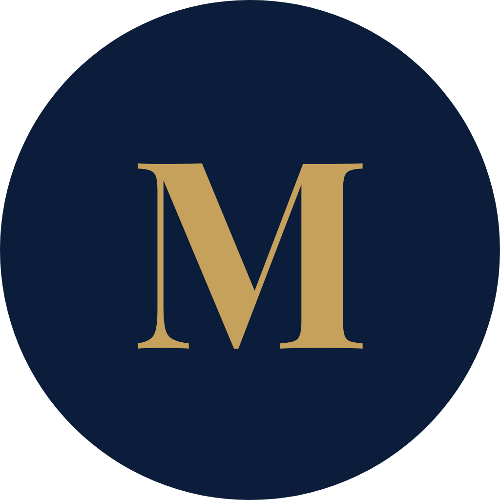

ActuelPour comparer

MeyvinMeyvin
Un médaillon rond, un « M » doré et une police à empattements : ces trois codes sont ceux du chocolat, de la bijouterie, du « luxe ». Ils disent peu de choses de la rigueur chiffrée.
Le logo actuel (pièce dorée, serif, médaillon) évoque plus la confiserie ou la bijouterie que l'expertise comptable. Voici cinq pistes plus sobres, avec chacune sa logique. Ce sont des esquisses : une fois la direction choisie, on les affine (tracé définitif, lettres dessinées). Changez la couleur d'accent en haut pour voir l'effet de l'or.

MeyvinUn médaillon rond, un « M » doré et une police à empattements : ces trois codes sont ceux du chocolat, de la bijouterie, du « luxe ». Ils disent peu de choses de la rigueur chiffrée.
Un carré aux angles arrondis et un M géométrique blanc : net, lisible jusqu'à 16 pixels (icône du navigateur, avatar LinkedIn). Le petit carré d'accent rappelle une case cochée ou un point de pointage. Aucun ornement.
Le double trait sous le M est celui qu'on tire sous un total dans une comptabilité. Vos confrères le reconnaissent, les autres y voient un soulignement discret. À l'animation, les deux traits se tirent l'un après l'autre : le geste du comptable qui arrête un compte.
Deux arches côte à côte forment un « m » minuscule, et l'image d'un pont : le lien entre un siège à l'étranger et la France, qui est votre pôle international. La seconde arche prend la couleur d'accent. Le plus original des cinq, et celui qui s'éloigne le plus des codes habituels.
Aucun symbole : le nom, en minuscules, avec le point du « i » remplacé par un petit carré, celui d'une case de pointage. Le plus moderne et le moins chargé. Pour l'icône du navigateur, on garde un « m » dans une tuile.
Une feuille au coin plié, une pièce, une facture, un justificatif : l'objet du quotidien du cabinet, avec le M dessus. Le coin plié prend la couleur d'accent. Plus parlant que la tuile A, un peu moins épuré.